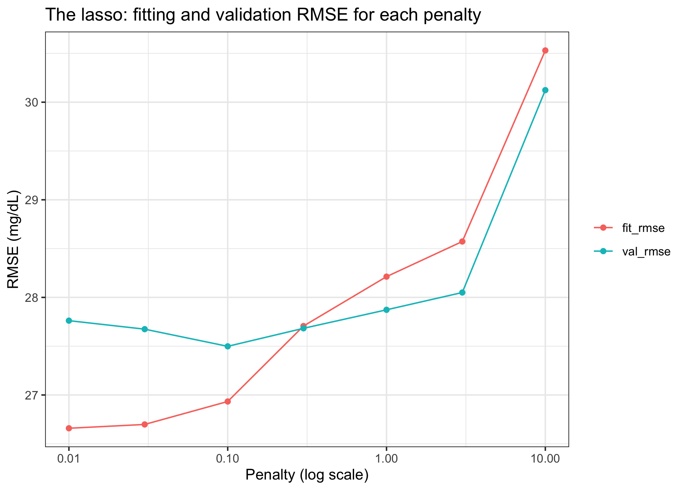
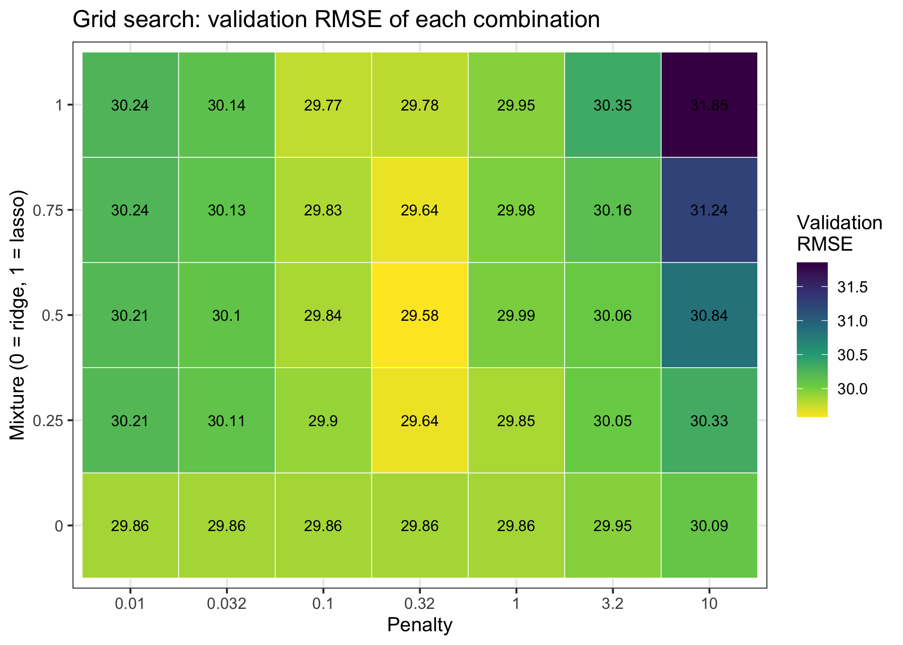
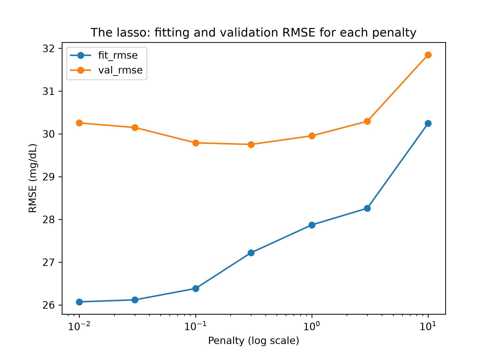
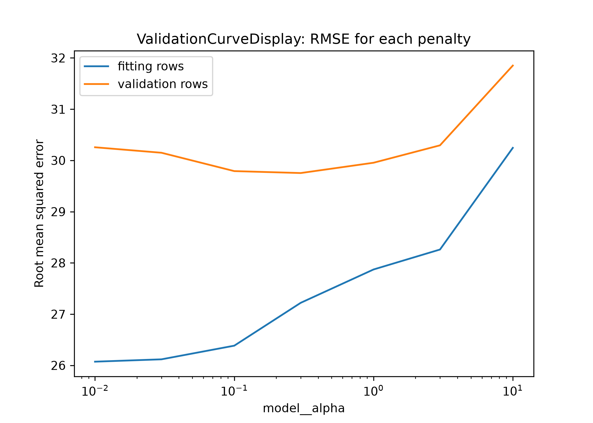

# Packages for this exercise. If one is missing, remove the # and run this line once:
# install.packages(c("tidyverse", "tidymodels", "glmnet"))
library(tidyverse)
library(tidymodels)
theme_set(theme_bw()) # white background for every plot
options(pillar.sigfig = 4) # show four significant figures in tablesExercise 5.2 — Hyperparameters: choosing the lasso and ridge penalty
Some settings of a model are not learnt from the data: we choose them before fitting. They are called hyperparameters. In this exercise the hyperparameters are those of regularisation: a linear regression that pays a price for large coefficients, so that it fits the training rows a little less closely in exchange for a simpler model. How large the price is, \(\lambda\), must be chosen, and we choose it by trying several values and keeping the one that predicts best on rows the model has not seen. The page Lasso and ridge in a picture explains what the penalty does.
Theory: hyperparameters; grid search; why candidates are scored on a validation set and not on the training rows; tune_grid() and GridSearchCV(); refitting the chosen model and checking it once on the test rows.
NoteThe plots are for looking at
The code for every plot is folded away just above it, in case you are curious, and all of it is in the notebook linked at the top of each tab. You are not expected to write it yourself.
Download this exercise as an R Markdown notebook (.Rmd): the text and every code cell of the R version, including the code for the plots, with the blanks left for you to fill in. Open it in RStudio and run it a chunk at a time.
Packages and data
The same 750 people and the same split as Exercise 5.1, from data/diabetes_clean.csv. The outcome is glucose again, but this time the other seven measurements are the predictors. In pressure, triceps and insulin a zero means “not measured”, so we turn the zeros into NA and let the recipe fill them in.
diabetes <- read_csv("data/diabetes_clean.csv") |>
select(-diabetes) |> # glucose is the outcome
mutate(across(c(pressure, triceps, insulin), ~ na_if(.x, 0))) # 0 means "not measured"
test_rows <- seq(1, nrow(diabetes), by = 5) # every fifth person is held back
train <- diabetes[-test_rows, ]
test <- diabetes[test_rows, ]Part 1 — A model with room to overfit
The recipe fills in the missing values with the median (Day 2), adds every product of two predictors (pregnant_x_age, …) and every square, and standardises the result. Seven predictors become 35 columns: plenty of room to fit noise.
glucose_rec <- recipe(glucose ~ ., data = train) |>
step_impute_median(all_predictors()) |> # fill the missing values
step_interact(terms = ~ all_predictors():all_predictors()) |> # products of two predictors
step_poly(all_predictors(), -contains("_x_"), degree = 2,
options = list(raw = TRUE)) |> # each predictor and its square
step_normalize(all_predictors()) # one scale for every column
glucose_rec |>
prep() |>
bake(new_data = NULL) |>
dim()#> [1] 600 36600 rows and 36 columns: glucose and the 35 predictor columns.
The lasso adds a penalty \(\lambda \times \sum_j |\beta_j|\) to the fitting (see Lasso and ridge in a picture). \(\lambda\) is a hyperparameter: a setting we choose before fitting, which the fitting does not choose for us. The degree of the polynomial in Exercise 5.1 was another. In tidymodels \(\lambda\) is called penalty, and mixture = 1 asks for the lasso. We mark penalty with tune(), a placeholder for “to be chosen”, and fill it in later with finalize_workflow():
lasso_wf <- workflow() |>
add_recipe(glucose_rec) |>
add_model(linear_reg(penalty = tune(), mixture = 1) |>
set_engine("glmnet"))Part 2 — A grid search, scored on the training rows
A grid search tries a list of values, fits one model for each, and keeps the one with the lowest error. Try seven penalties, each about three times the one before. Fit each model on the training rows and, for now, measure its RMSE on the same rows:
# Replace every ______ below, then run this cell.
penalties <- c(0.01, 0.03, 0.1, 0.3, 1, 3, 10)
train_results <- data.frame()
for (p in penalties) {
lasso_fit <- lasso_wf |>
finalize_workflow(tibble(penalty = p)) |> # fill in the placeholder
fit(data = train)
train_rmse <- augment(lasso_fit, new_data = ______) |>
rmse(truth = glucose, estimate = .pred)
train_results <- bind_rows(train_results,
data.frame(penalty = p, train_rmse = train_rmse$.estimate))
}
train_results
TipStuck?
For now, the model is scored on the rows it was fitted on.
The RMSE only ever goes up: 26.83 at a penalty of 0.01, 30.78 at 10. Scored on its own training rows, the smallest penalty always wins, and no penalty at all would win outright.
Question! Does that mean the penalty is useless?
ImportantLearning points
- A grid search fits one model for each candidate value and keeps the candidate with the lowest error.
- On the rows it was fitted on, a smaller penalty always looks better, because a freer model can follow those rows, noise included, more closely.
Part 3 — The same grid search, scored on a validation set
The training RMSE cannot tell us when the model starts fitting noise, because the noise is in the rows it is measured on. We need rows the model has not seen. The test rows are kept for one final check of the model we choose: if we also used them to make the choice, we would pick whichever candidate happened to do best on those 150 people, and its test RMSE would no longer be an honest estimate (the Stretch of Exercise 5.1).
So we split the training rows once more. Every fourth training row becomes a validation row: each candidate is fitted on the other rows and scored on these.
val_rows <- seq(1, nrow(train), by = 4) # every fourth training row
fitting <- train[-val_rows, ]
validation <- train[val_rows, ]
nrow(fitting)#> [1] 450nrow(validation)#> [1] 150Run the grid search again: fit on fitting, score on both sets.
# Replace every ______ below, then run this cell.
val_results <- data.frame()
for (p in penalties) {
lasso_fit <- lasso_wf |>
finalize_workflow(tibble(penalty = p)) |>
fit(data = ______)
fit_rmse <- augment(lasso_fit, new_data = fitting) |>
rmse(truth = glucose, estimate = .pred)
val_rmse <- augment(lasso_fit, new_data = ______) |>
rmse(truth = glucose, estimate = .pred)
val_results <- bind_rows(val_results,
data.frame(penalty = p,
fit_rmse = fit_rmse$.estimate,
val_rmse = val_rmse$.estimate))
}
val_results
TipStuck?
Each candidate is fitted on the 450 fitting rows and scored on the 150 rows it has not seen.
Code for this plot (optional)
val_results |>
pivot_longer(c(fit_rmse, val_rmse), names_to = "rows", values_to = "rmse") |>
ggplot(aes(x = penalty, y = rmse, colour = rows)) +
geom_line() +
geom_point() +
scale_x_log10() +
labs(x = "Penalty (log scale)", y = "RMSE (mg/dL)", colour = NULL,
title = "The lasso: fitting and validation RMSE for each penalty")
The two columns tell different stories. The fitting RMSE rises with the penalty, as in Part 2. The validation RMSE first falls, from 30.24 to its lowest value, 29.74 at a penalty of 0.3, and then rises again, to 31.85 at 10.
Why? With a small penalty the model follows the noise of the 450 fitting people; that noise does not repeat in the 150 validation people, so their predictions are worse (overfitting). With a large penalty the model is too restrained to follow even the real pattern, and both errors are high (underfitting). The validation rows played no part in the fitting, so they behave like new patients, and their error shows the cost of both. The penalty 0.3 is chosen because it has the lowest validation RMSE. Choosing a hyperparameter on rows the model was not fitted on is the normal way to choose it.
NoteComing later: cross-validation
One validation set is the simplest way to compare candidates, but the result depends on which 150 people landed in it (try the Stretch). In Exercise 5.4 you will learn cross-validation, a resampling method that repeats the comparison on several different splits of the training rows and averages.
ImportantLearning points
- Candidates are scored on validation rows that were not used to fit them; the test rows are kept for one final check.
- Too small a penalty overfits, too large a penalty underfits; the validation error is lowest in between.
Part 4 — The same search with tune_grid()
tidymodels runs this loop for you. tune_grid() takes the workflow, the grid of candidates, and the split to score them on. It expects the split as a resampling object; here that object holds our one split, with the fitting rows for fitting and the validation rows for scoring.
one_split <- make_splits(list(analysis = setdiff(1:nrow(train), val_rows), # fit on these
assessment = as.integer(val_rows)), # score on these
data = train)
val_set <- manual_rset(list(one_split), ids = "validation")
val_set#> # Manual resampling
#> # A tibble: 1 × 2
#> splits id
#> <list> <chr>
#> 1 <split [450/150]> validationlasso_res <- tune_grid(lasso_wf,
resamples = val_set,
grid = tibble(penalty = penalties),
metrics = metric_set(rmse))
collect_metrics(lasso_res)#> # A tibble: 7 × 7
#> penalty .metric .estimator mean n std_err .config
#> <dbl> <chr> <chr> <dbl> <int> <dbl> <chr>
#> 1 0.01 rmse standard 30.24 1 NA pre0_mod1_post0
#> 2 0.03 rmse standard 30.14 1 NA pre0_mod2_post0
#> 3 0.1 rmse standard 29.77 1 NA pre0_mod3_post0
#> 4 0.3 rmse standard 29.74 1 NA pre0_mod4_post0
#> 5 1 rmse standard 29.95 1 NA pre0_mod5_post0
#> 6 3 rmse standard 30.30 1 NA pre0_mod6_post0
#> 7 10 rmse standard 31.85 1 NA pre0_mod7_post0select_best(lasso_res, metric = "rmse")#> # A tibble: 1 × 2
#> penalty .config
#> <dbl> <chr>
#> 1 0.3 pre0_mod4_post0The mean column is the validation RMSE of your loop, number for number, and select_best() picks the same penalty, 0.3. autoplot() draws the results:
autoplot(lasso_res) +
labs(title = "tune_grid(): validation RMSE for each penalty")
| Your loop in Part 3 | tune_grid() |
|---|---|
for (p in penalties) |
grid = tibble(penalty = penalties) |
fit(data = fitting) |
the analysis rows of val_set |
augment(..., new_data = validation) and rmse() |
the assessment rows of val_set, metrics = metric_set(rmse) |
read the table for the lowest val_rmse |
select_best(lasso_res, metric = "rmse") |
Which hyperparameters does a model have? extract_parameter_set_dials() lists the ones marked with tune() in a workflow, and the parsnip page for linear_reg() with glmnet lists those the model offers: penalty and mixture. Chapter 12 of Tidy Modeling with R explains tuning in tidymodels.
extract_parameter_set_dials(lasso_wf)
ImportantLearning points
tune()marks a hyperparameter;tune_grid()fits and scores every candidate;collect_metrics(),autoplot()andselect_best()show and choose.- It is the loop of Part 3, written for you.
Part 5 — Tuning the mix of lasso and ridge
mixture is the other hyperparameter: 1 is the lasso, 0 is ridge, and values in between mix the two penalties. Keep the penalty at 0.3 and tune only the mixture. (glmnet needs a penalty in every row of the grid, so we mark both with tune() and give the penalty a single value.)
# Replace every ______ below, then run this cell.
mix_wf <- workflow() |>
add_recipe(glucose_rec) |>
add_model(linear_reg(penalty = tune(), mixture = tune()) |>
set_engine("glmnet"))
mix_res <- tune_grid(mix_wf,
resamples = val_set,
grid = tibble(penalty = 0.3,
mixture = c(0, 0.25, 0.5, 0.75, ______)),
metrics = metric_set(rmse),
control = control_grid(save_workflow = TRUE)) # keep the workflow for fit_best()
collect_metrics(mix_res)
select_best(mix_res, metric = "rmse")
TipStuck?
The mixture runs from 0 (ridge) to 1 (lasso).
ImportantLearning points
- Tune one hyperparameter at a time by giving the others a single value in the grid.
Part 6 — Refitting the chosen model, and its one test
During the search every candidate was fitted on the 450 fitting rows only. Once the best hyperparameters are known, that one model is fitted again on all 600 training rows (fitting and validation together): the same settings, more data. This is the refit. Do it by hand first, using the results table, then with the tool, and check that the two agree.
By hand. Take the row with the lowest validation RMSE, put its values into the workflow with finalize_workflow(), and fit:
# Replace every ______ below, then run this cell.
best <- collect_metrics(mix_res) |>
slice_min(mean, n = 1) |> # the lowest validation RMSE
select(penalty, mixture)
best
refit_by_hand <- mix_wf |>
finalize_workflow(best) |> # put the chosen values in
fit(data = ______) # all 600 training rows
TipStuck?
The refit uses every training row, fitting and validation together.
With the tool. fit_best() does the same three steps in one: it finds the best candidate, puts its values into the workflow, and fits it on all the training rows of the search. (It needs the search to have kept the workflow, which is why Part 5 used control_grid(save_workflow = TRUE).)
refit_by_tool <- fit_best(mix_res)Are they the same model? Put the coefficients side by side:
coefs <- tidy(refit_by_hand) |>
select(term, by_hand = estimate) |>
left_join(tidy(refit_by_tool) |> select(term, fit_best = estimate), by = "term")
head(coefs)#> # A tibble: 6 × 3
#> term by_hand fit_best
#> <chr> <dbl> <dbl>
#> 1 (Intercept) 125.9 125.9
#> 2 pregnant_x_pressure 0 0
#> 3 pregnant_x_triceps -6.362 -6.362
#> 4 pregnant_x_insulin 0.008338 0.008338
#> 5 pregnant_x_mass -1.581 -1.581
#> 6 pregnant_x_pedigree 2.097 2.097all.equal(coefs$by_hand, coefs$fit_best)#> [1] TRUETRUE: every coefficient is the same. fit_best() is the refit you did by hand.
Now the one test check, with the unpenalised model for comparison:
plain_fit <- workflow() |>
add_recipe(glucose_rec) |>
add_model(linear_reg()) |>
fit(data = train)
augment(refit_by_tool, new_data = test) |>
rmse(truth = glucose, estimate = .pred)#> # A tibble: 1 × 3
#> .metric .estimator .estimate
#> <chr> <chr> <dbl>
#> 1 rmse standard 26.90augment(plain_fit, new_data = test) |>
rmse(truth = glucose, estimate = .pred)#> # A tibble: 1 × 3
#> .metric .estimator .estimate
#> <chr> <chr> <dbl>
#> 1 rmse standard 27.12tidy(refit_by_tool) |>
filter(term != "(Intercept)", estimate != 0) |>
nrow() # columns kept#> [1] 20The chosen model (penalty 0.3, mixture 0.5) has a test RMSE of 26.90 against 27.12 for the unpenalised model, and it uses 20 of the 35 columns.
Question! The penalised model is only a little more accurate on the test rows, but it uses fewer columns. Why might that still matter?
NoteFrom one validation set to cross-validation
In Exercise 5.4 the only change is the resampling object: instead of our one split, vfold_cv() makes five, and tune_grid() averages over them. select_best() and fit_best() work as here.
val_set <- manual_rset(list(one_split), ids = "validation") # this exercise
folds <- vfold_cv(train, v = 5) # Exercise 5.4
tune_grid(lasso_wf, resamples = folds, grid = ...)
ImportantLearning points
- Once the hyperparameters are chosen, refit that one model on all the training rows: by hand with
finalize_workflow()andfit(), or in one step withfit_best(). Both give the same model. - Then check it once on the test rows.
Download this exercise as a Jupyter notebook (.ipynb): the text and every code cell of the Python version, including the code for the plots, with the blanks left for you to fill in. Open it in Jupyter or VS Code and run it a cell at a time.
Packages and data
# Packages for this exercise. If one is missing, install it once from a terminal
# (in a Jupyter notebook, type %pip instead of pip):
# pip install pandas numpy matplotlib scikit-learn
import pandas as pd
import numpy as np
import matplotlib.pyplot as plt
from sklearn.pipeline import Pipeline
from sklearn.impute import SimpleImputer
from sklearn.preprocessing import PolynomialFeatures, StandardScaler
from sklearn.linear_model import LinearRegression, Lasso, ElasticNet
from sklearn.model_selection import GridSearchCV, PredefinedSplit, ValidationCurveDisplay
from sklearn.metrics import root_mean_squared_errorThe same 750 people and the same split as Exercise 5.1, from data/diabetes_clean.csv. The outcome is glucose again, but this time the other seven measurements are the predictors. In pressure, triceps and insulin a zero means “not measured”, so we turn the zeros into missing values and let the pipeline fill them in.
diabetes = pd.read_csv("data/diabetes_clean.csv").drop(columns="diabetes") # glucose is the outcome
for col in ["pressure", "triceps", "insulin"]:
diabetes[col] = diabetes[col].replace(0, np.nan) # 0 means "not measured"
predictors = ["pregnant", "pressure", "triceps", "insulin", "mass", "pedigree", "age"]
is_test = diabetes.index % 5 == 0 # every fifth person is held back
train = diabetes[~is_test]
test = diabetes[is_test]Part 1 — A model with room to overfit
The pipeline fills in the missing values with the median (Day 2), adds every square and every product of two predictors with PolynomialFeatures(degree=2), and standardises the result. Seven predictors become 35 columns: plenty of room to fit noise.
The lasso adds a penalty \(\lambda \times \sum_j |\beta_j|\) to the fitting (see Lasso and ridge in a picture). \(\lambda\) is a hyperparameter: a setting we choose before fitting, which the fitting does not choose for us. The degree of the polynomial in Exercise 5.1 was another. In scikit-learn the lasso is Lasso(), and \(\lambda\) is its alpha. (max_iter lets the fitting run longer than the default, because the squares and products are correlated and take longer to fit.)
lasso_pipe = Pipeline([
("impute", SimpleImputer(strategy="median")), # fill the missing values
("poly", PolynomialFeatures(degree=2, include_bias=False)), # squares and products
("scale", StandardScaler()), # one scale for every column
("model", Lasso(max_iter=100000)),
])The hyperparameter of a step in a pipeline is set with set_params(), using the step’s name, two underscores and the setting’s name: model__alpha.
Part 2 — A grid search, scored on the training rows
A grid search tries a list of values, fits one model for each, and keeps the one with the lowest error. Try seven penalties, each about three times the one before. Fit each model on the training rows and, for now, measure its RMSE on the same rows:
# Replace every ______ below, then run this cell.
penalties = [0.01, 0.03, 0.1, 0.3, 1, 3, 10]
rows = []
for p in penalties:
lasso_pipe.set_params(model__alpha=p) # fill in the hyperparameter
lasso_pipe.fit(train[predictors], train["glucose"])
train_rmse = root_mean_squared_error(______["glucose"], lasso_pipe.predict(______[predictors]))
rows.append({"penalty": p, "train_rmse": train_rmse})
train_results = pd.DataFrame(rows)
train_results.round(2)
TipStuck?
For now, the model is scored on the rows it was fitted on.
The RMSE only ever goes up: 26.83 at a penalty of 0.01, 30.78 at 10. Scored on its own training rows, the smallest penalty always wins, and no penalty at all would win outright.
Question! Does that mean the penalty is useless?
ImportantLearning points
- A grid search fits one model for each candidate value and keeps the candidate with the lowest error.
- On the rows it was fitted on, a smaller penalty always looks better, because a freer model can follow those rows, noise included, more closely.
Part 3 — The same grid search, scored on a validation set
The training RMSE cannot tell us when the model starts fitting noise, because the noise is in the rows it is measured on. We need rows the model has not seen. The test rows are kept for one final check of the model we choose: if we also used them to make the choice, we would pick whichever candidate happened to do best on those 150 people, and its test RMSE would no longer be an honest estimate (the Stretch of Exercise 5.1).
So we split the training rows once more. Every fourth training row becomes a validation row: each candidate is fitted on the other rows and scored on these.
is_val = np.arange(len(train)) % 4 == 0 # every fourth training row
fitting = train[~is_val]
validation = train[is_val]
print(len(fitting), len(validation))#> 450 150Run the grid search again: fit on fitting, score on both sets.
# Replace every ______ below, then run this cell.
rows = []
for p in penalties:
lasso_pipe.set_params(model__alpha=p)
lasso_pipe.fit(______[predictors], ______["glucose"])
fit_rmse = root_mean_squared_error(fitting["glucose"], lasso_pipe.predict(fitting[predictors]))
val_rmse = root_mean_squared_error(______["glucose"], lasso_pipe.predict(______[predictors]))
rows.append({"penalty": p, "fit_rmse": fit_rmse, "val_rmse": val_rmse})
val_results = pd.DataFrame(rows)
val_results.round(2)
TipStuck?
Each candidate is fitted on the 450 fitting rows and scored on the 150 rows it has not seen.
Code for this plot (optional)
fig, ax = plt.subplots()
ax.plot(val_results["penalty"], val_results["fit_rmse"], marker="o", label="fit_rmse")
ax.plot(val_results["penalty"], val_results["val_rmse"], marker="o", label="val_rmse")
ax.set_xscale("log")
ax.set_xlabel("Penalty (log scale)")
ax.set_ylabel("RMSE (mg/dL)")
ax.set_title("The lasso: fitting and validation RMSE for each penalty")
ax.legend()
plt.show()
The two columns tell different stories. The fitting RMSE rises with the penalty, as in Part 2. The validation RMSE first falls, from 30.26 to its lowest value, 29.75 at a penalty of 0.3, and then rises again, to 31.85 at 10.
Why? With a small penalty the model follows the noise of the 450 fitting people; that noise does not repeat in the 150 validation people, so their predictions are worse (overfitting). With a large penalty the model is too restrained to follow even the real pattern, and both errors are high (underfitting). The validation rows played no part in the fitting, so they behave like new patients, and their error shows the cost of both. The penalty 0.3 is chosen because it has the lowest validation RMSE. Choosing a hyperparameter on rows the model was not fitted on is the normal way to choose it.
NoteComing later: cross-validation
One validation set is the simplest way to compare candidates, but the result depends on which 150 people landed in it (try the Stretch). In Exercise 5.4 you will learn cross-validation, a resampling method that repeats the comparison on several different splits of the training rows and averages.
ImportantLearning points
- Candidates are scored on validation rows that were not used to fit them; the test rows are kept for one final check.
- Too small a penalty overfits, too large a penalty underfits; the validation error is lowest in between.
Part 4 — The same search with GridSearchCV()
scikit-learn runs this loop for you. GridSearchCV() takes the pipeline, the grid of candidates, and the split to score them on. PredefinedSplit() gives it our one split: rows marked -1 are always used for fitting, rows marked 0 are the validation rows. GridSearchCV() always looks for the highest score, so for an error it uses the negative RMSE.
one_split = PredefinedSplit(np.where(is_val, 0, -1)) # 0 = validation row, -1 = fitting row
lasso_search = GridSearchCV(lasso_pipe,
param_grid={"model__alpha": penalties},
cv=one_split,
scoring="neg_root_mean_squared_error")
lasso_search.fit(train[predictors], train["glucose"])GridSearchCV(cv=PredefinedSplit(test_fold=array([ 0, -1, ..., -1, -1], shape=(600,))),
estimator=Pipeline(steps=[('impute',
SimpleImputer(strategy='median')),
('poly',
PolynomialFeatures(include_bias=False)),
('scale', StandardScaler()),
('model',
Lasso(alpha=10, max_iter=100000))]),
param_grid={'model__alpha': [0.01, 0.03, 0.1, 0.3, 1, 3, 10]},
scoring='neg_root_mean_squared_error')In a Jupyter environment, please rerun this cell to show the HTML representation or trust the notebook. On GitHub, the HTML representation is unable to render, please try loading this page with nbviewer.org.
Parameters
Fitted attributes
Parameters
Fitted attributes
| Name | Type | Value |
|---|---|---|
| feature_names_in_ feature_names_in_: ndarray of shape (`n_features_in_`,) Names of features seen during :term:`fit`. Defined only when `X` has feature names that are all strings. .. versionadded:: 1.0 |
ndarray[object](7,) | ['pregnant','pressure','triceps',...,'mass','pedigree','age'] |
| indicator_ indicator_: :class:`~sklearn.impute.MissingIndicator` Indicator used to add binary indicators for missing values. `None` if `add_indicator=False`. |
NoneType | None |
| n_features_in_ n_features_in_: int Number of features seen during :term:`fit`. .. versionadded:: 0.24 |
int | 7 |
| statistics_ statistics_: array of shape (n_features,) The imputation fill value for each feature. Computing statistics can result in `np.nan` values. During :meth:`transform`, features corresponding to `np.nan` statistics will be discarded. |
ndarray[float64](7,) | [ 3. ,72. ,29. ,...,32.4 , 0.38,29. ] |
7 features
| pregnant |
| pressure |
| triceps |
| insulin |
| mass |
| pedigree |
| age |
Parameters
Fitted attributes
| Name | Type | Value |
|---|---|---|
| n_features_in_ n_features_in_: int Number of features seen during :term:`fit`. .. versionadded:: 0.24 |
int | 7 |
| n_output_features_ n_output_features_: int The total number of polynomial output features. The number of output features is computed by iterating over all suitably sized combinations of input features. |
int | 35 |
| powers_ powers_: ndarray of shape (`n_output_features_`, `n_features_in_`) `powers_[i, j]` is the exponent of the jth input in the ith output. |
ndarray[int64](35, 7) | [[1,0,0,...,0,0,0], [0,1,0,...,0,0,0], [0,0,1,...,0,0,0], ..., [0,0,0,...,0,2,0], [0,0,0,...,0,1,1], [0,0,0,...,0,0,2]] |
35 features
| x0 |
| x1 |
| x2 |
| x3 |
| x4 |
| x5 |
| x6 |
| x0^2 |
| x0 x1 |
| x0 x2 |
| x0 x3 |
| x0 x4 |
| x0 x5 |
| x0 x6 |
| x1^2 |
| x1 x2 |
| x1 x3 |
| x1 x4 |
| x1 x5 |
| x1 x6 |
| x2^2 |
| x2 x3 |
| x2 x4 |
| x2 x5 |
| x2 x6 |
| x3^2 |
| x3 x4 |
| x3 x5 |
| x3 x6 |
| x4^2 |
| x4 x5 |
| x4 x6 |
| x5^2 |
| x5 x6 |
| x6^2 |
Parameters
Fitted attributes
35 features
| x0 |
| x1 |
| x2 |
| x3 |
| x4 |
| x5 |
| x6 |
| x7 |
| x8 |
| x9 |
| x10 |
| x11 |
| x12 |
| x13 |
| x14 |
| x15 |
| x16 |
| x17 |
| x18 |
| x19 |
| x20 |
| x21 |
| x22 |
| x23 |
| x24 |
| x25 |
| x26 |
| x27 |
| x28 |
| x29 |
| x30 |
| x31 |
| x32 |
| x33 |
| x34 |
Parameters
Fitted attributes
results = pd.DataFrame(lasso_search.cv_results_)
results["val_rmse"] = -results["mean_test_score"] # back to a positive RMSE
print(results[["param_model__alpha", "val_rmse"]].round(2))#> param_model__alpha val_rmse
#> 0 0.01 30.26
#> 1 0.03 30.15
#> 2 0.10 29.79
#> 3 0.30 29.75
#> 4 1.00 29.95
#> 5 3.00 30.29
#> 6 10.00 31.85print(lasso_search.best_params_)#> {'model__alpha': 0.3}The val_rmse column is the validation RMSE of your loop, number for number, and best_params_ is the same penalty, 0.3. (scikit-learn calls the held-out rows “test” in its names, such as mean_test_score; here they are our validation rows.) ValidationCurveDisplay draws the fitting and the validation error for each value:
display = ValidationCurveDisplay.from_estimator(
lasso_pipe, train[predictors], train["glucose"],
param_name="model__alpha", param_range=penalties,
cv=one_split, scoring="neg_root_mean_squared_error", negate_score=True,
std_display_style=None)
display.ax_.set_xscale("log")
display.ax_.legend(["fitting rows", "validation rows"])
display.ax_.set_title("ValidationCurveDisplay: RMSE for each penalty")
plt.show()
| Your loop in Part 3 | GridSearchCV() |
|---|---|
for p in penalties: |
param_grid={"model__alpha": penalties} |
fit(fitting[...]) |
the rows marked -1 in one_split |
score on validation with root_mean_squared_error |
the rows marked 0, scoring="neg_root_mean_squared_error" |
read the table for the lowest val_rmse |
best_params_ |
Which hyperparameters does a model have? get_params() lists every setting of every step of a pipeline, under the names set_params() and param_grid use; the scikit-learn page for ElasticNet explains alpha and l1_ratio. The user guide’s tuning the hyper-parameters of an estimator covers the search tools.
[name for name in lasso_pipe.get_params() if name.startswith("model__")]#> ['model__alpha', 'model__copy_X', 'model__fit_intercept', 'model__max_iter', 'model__positive', 'model__precompute', 'model__random_state', 'model__selection', 'model__tol', 'model__warm_start']
ImportantLearning points
GridSearchCV()fits and scores every candidate;cv_results_,best_params_andValidationCurveDisplayshow and choose.- It is the loop of Part 3, written for you.
Part 5 — Tuning the mix of lasso and ridge
ElasticNet() has a second hyperparameter, l1_ratio: 1 is the lasso, 0 is ridge, and values in between mix the two penalties. Keep the penalty at 0.3 and tune only l1_ratio:
# Replace every ______ below, then run this cell.
mix_pipe = Pipeline([
("impute", SimpleImputer(strategy="median")),
("poly", PolynomialFeatures(degree=2, include_bias=False)),
("scale", StandardScaler()),
("model", ElasticNet(alpha=0.3, max_iter=100000)),
])
mix_search = GridSearchCV(mix_pipe,
param_grid={"model__l1_ratio": [0, 0.25, 0.5, 0.75, ______]},
cv=one_split,
scoring="neg_root_mean_squared_error")
mix_search.fit(train[predictors], train["glucose"])
mix_results = pd.DataFrame(mix_search.cv_results_)
mix_results["val_rmse"] = -mix_results["mean_test_score"]
print(mix_results[["param_model__l1_ratio", "val_rmse"]].round(2))
print(mix_search.best_params_)
TipStuck?
l1_ratio runs from 0 (ridge) to 1 (lasso).
ImportantLearning points
- Tune one hyperparameter at a time by fixing the others in the pipeline and putting only one in
param_grid.
Part 6 — Refitting the chosen model, and its one test
During the search every candidate was fitted on the 450 fitting rows only. Once the best hyperparameters are known, that one model is fitted again on all 600 training rows (fitting and validation together): the same settings, more data. This is the refit. Do it by hand first, using the results table, then with the tool, and check that the two agree.
By hand. Take the row with the lowest validation RMSE, put its value into a fresh copy of the pipeline with set_params(), and fit. clone() makes an unfitted copy of the pipeline, so the one inside the search is left alone.
# Replace every ______ below, then run this cell.
from sklearn.base import clone
best = mix_results.loc[mix_results["val_rmse"].idxmin(), "param_model__l1_ratio"] # the lowest validation RMSE
print("best l1_ratio:", best)
refit_by_hand = clone(mix_pipe).set_params(model__l1_ratio=best) # put the chosen value in
refit_by_hand.fit(______[predictors], ______["glucose"]) # all 600 training rows
TipStuck?
The refit uses every training row, fitting and validation together.
With the tool. GridSearchCV() has already done the refit: after the search it puts the best value into the pipeline and fits it on all the rows it was given (refit=True, the default). The result is in best_estimator_.
refit_by_tool = mix_search.best_estimator_Are they the same model? Put the coefficients side by side:
coefs = pd.DataFrame({"by_hand": refit_by_hand["model"].coef_,
"best_estimator_": refit_by_tool["model"].coef_},
index=refit_by_tool[:-1].get_feature_names_out()) # the 35 column names
print(coefs.head().round(3))#> by_hand best_estimator_
#> pregnant -0.000 -0.000
#> pressure -0.000 -0.000
#> triceps -0.000 -0.000
#> insulin 19.385 19.385
#> mass 0.000 0.000print("same model:", np.allclose(coefs["by_hand"], coefs["best_estimator_"]))#> same model: TrueTrue: every coefficient is the same. best_estimator_ is the refit you did by hand.
Now the one test check, with the unpenalised model for comparison:
plain_pipe = Pipeline(mix_pipe.steps[:-1] + [("model", LinearRegression())])
plain_pipe.fit(train[predictors], train["glucose"])Pipeline(steps=[('impute', SimpleImputer(strategy='median')),
('poly', PolynomialFeatures(include_bias=False)),
('scale', StandardScaler()), ('model', LinearRegression())])In a Jupyter environment, please rerun this cell to show the HTML representation or trust the notebook. On GitHub, the HTML representation is unable to render, please try loading this page with nbviewer.org.
Parameters
Fitted attributes
| Name | Type | Value |
|---|---|---|
| feature_names_in_ feature_names_in_: ndarray of shape (`n_features_in_`,) Names of features seen during :term:`fit`. Only defined if the underlying estimator exposes such an attribute when fit. .. versionadded:: 1.0 |
ndarray[object](7,) | ['pregnant','pressure','triceps',...,'mass','pedigree','age'] |
| n_features_in_ n_features_in_: int Number of features seen during :term:`fit`. Only defined if the underlying first estimator in `steps` exposes such an attribute when fit. .. versionadded:: 0.24 |
int | 7 |
Parameters
Fitted attributes
| Name | Type | Value |
|---|---|---|
| feature_names_in_ feature_names_in_: ndarray of shape (`n_features_in_`,) Names of features seen during :term:`fit`. Defined only when `X` has feature names that are all strings. .. versionadded:: 1.0 |
ndarray[object](7,) | ['pregnant','pressure','triceps',...,'mass','pedigree','age'] |
| indicator_ indicator_: :class:`~sklearn.impute.MissingIndicator` Indicator used to add binary indicators for missing values. `None` if `add_indicator=False`. |
NoneType | None |
| n_features_in_ n_features_in_: int Number of features seen during :term:`fit`. .. versionadded:: 0.24 |
int | 7 |
| statistics_ statistics_: array of shape (n_features,) The imputation fill value for each feature. Computing statistics can result in `np.nan` values. During :meth:`transform`, features corresponding to `np.nan` statistics will be discarded. |
ndarray[float64](7,) | [ 3. ,72. ,29. ,...,32.4 , 0.38,29. ] |
7 features
| pregnant |
| pressure |
| triceps |
| insulin |
| mass |
| pedigree |
| age |
Parameters
Fitted attributes
| Name | Type | Value |
|---|---|---|
| n_features_in_ n_features_in_: int Number of features seen during :term:`fit`. .. versionadded:: 0.24 |
int | 7 |
| n_output_features_ n_output_features_: int The total number of polynomial output features. The number of output features is computed by iterating over all suitably sized combinations of input features. |
int | 35 |
| powers_ powers_: ndarray of shape (`n_output_features_`, `n_features_in_`) `powers_[i, j]` is the exponent of the jth input in the ith output. |
ndarray[int64](35, 7) | [[1,0,0,...,0,0,0], [0,1,0,...,0,0,0], [0,0,1,...,0,0,0], ..., [0,0,0,...,0,2,0], [0,0,0,...,0,1,1], [0,0,0,...,0,0,2]] |
35 features
| x0 |
| x1 |
| x2 |
| x3 |
| x4 |
| x5 |
| x6 |
| x0^2 |
| x0 x1 |
| x0 x2 |
| x0 x3 |
| x0 x4 |
| x0 x5 |
| x0 x6 |
| x1^2 |
| x1 x2 |
| x1 x3 |
| x1 x4 |
| x1 x5 |
| x1 x6 |
| x2^2 |
| x2 x3 |
| x2 x4 |
| x2 x5 |
| x2 x6 |
| x3^2 |
| x3 x4 |
| x3 x5 |
| x3 x6 |
| x4^2 |
| x4 x5 |
| x4 x6 |
| x5^2 |
| x5 x6 |
| x6^2 |
Parameters
Fitted attributes
35 features
| x0 |
| x1 |
| x2 |
| x3 |
| x4 |
| x5 |
| x6 |
| x7 |
| x8 |
| x9 |
| x10 |
| x11 |
| x12 |
| x13 |
| x14 |
| x15 |
| x16 |
| x17 |
| x18 |
| x19 |
| x20 |
| x21 |
| x22 |
| x23 |
| x24 |
| x25 |
| x26 |
| x27 |
| x28 |
| x29 |
| x30 |
| x31 |
| x32 |
| x33 |
| x34 |
Parameters
Fitted attributes
print("chosen model, test RMSE: ", round(root_mean_squared_error(test["glucose"], refit_by_tool.predict(test[predictors])), 2))#> chosen model, test RMSE: 27.04print("unpenalised model, test RMSE:", round(root_mean_squared_error(test["glucose"], plain_pipe.predict(test[predictors])), 2))#> unpenalised model, test RMSE: 27.12print("columns kept:", (refit_by_tool["model"].coef_ != 0).sum())#> columns kept: 14The chosen model (penalty 0.3, l1_ratio 1, the lasso) has a test RMSE of 27.04 against 27.12 for the unpenalised model, and it uses 14 of the 35 columns.
Question! The penalised model is only a little more accurate on the test rows, but it uses far fewer columns. Why might that still matter?
NoteFrom one validation set to cross-validation
In Exercise 5.4 the only change is cv: instead of our one split, cv=5 makes five, and GridSearchCV() averages over them. best_params_ and best_estimator_ work as here.
GridSearchCV(lasso_pipe, param_grid=..., cv=one_split, ...) # this exercise
GridSearchCV(lasso_pipe, param_grid=..., cv=5, ...) # Exercise 5.4
ImportantLearning points
- Once the hyperparameters are chosen, refit that one model on all the training rows: by hand with
clone(),set_params()andfit(), or letGridSearchCV()do it and takebest_estimator_. Both give the same model. - Then check it once on the test rows.
NoteOther ways to choose the candidates
A regular grid is the simplest way to choose which values to try, but not the only one. Random search draws the candidates at random from a range (grid_random() in tidymodels, RandomizedSearchCV() in scikit-learn). Space-filling designs, such as the Latin hypercube, spread a fixed number of candidates evenly over the range (grid_space_filling()). Iterative searches, such as Bayesian optimisation, choose each new candidate from the results so far. All of them score the candidates the same way as here. Read more in chapters 13 and 14 of Tidy Modeling with R (grid search, iterative search) and in the scikit-learn guide to tuning hyper-parameters.
Stretch
NoteStretch — a different validation set
Make the validation rows every fourth training row starting from the second (seq(2, nrow(train), by = 4) in R, np.arange(len(train)) % 4 == 1 in Python) and run the search of Part 3 or Part 4 again. Is the same penalty chosen? What does that tell you about choosing with a single validation set?